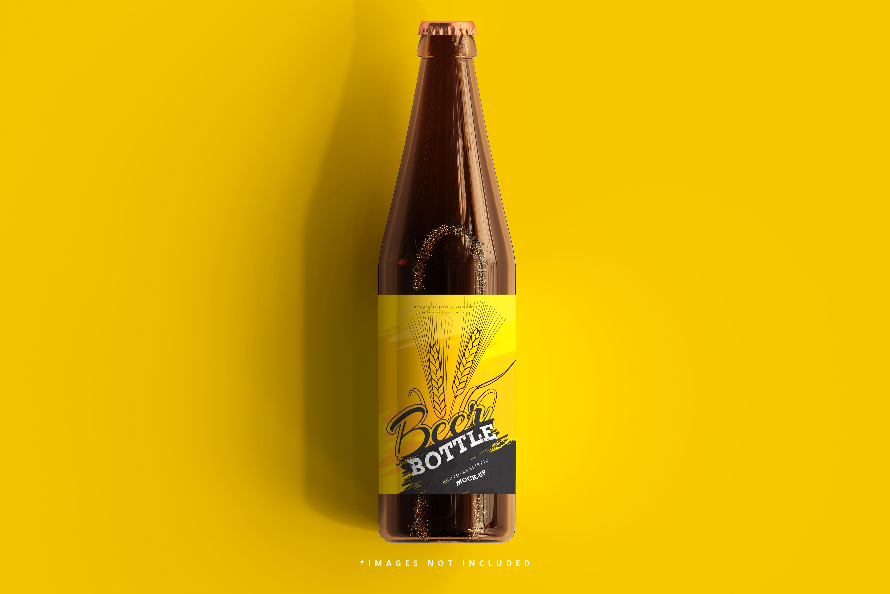
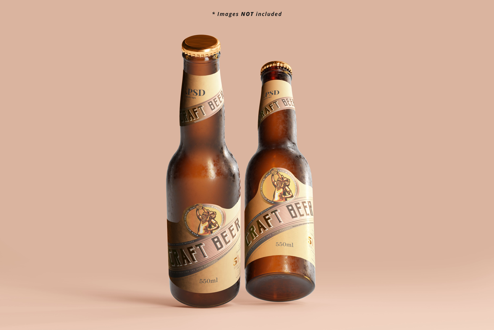
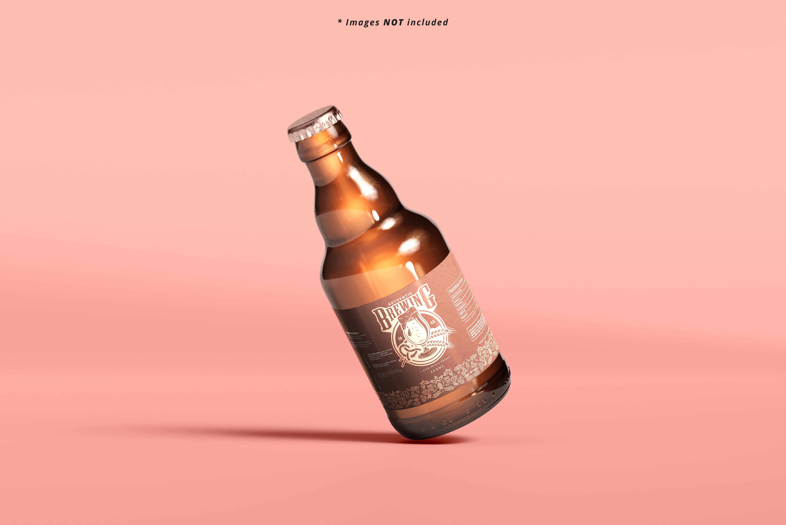
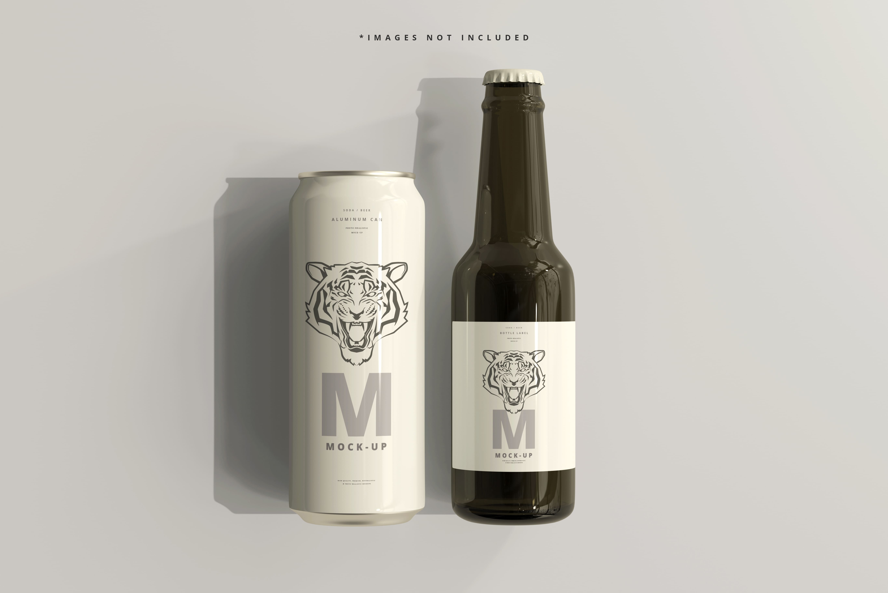

Una cerveza para cada momento
HONEY
ÁMBAR / MIEL / SUAVE / AROMÁTICA
Nuestra Honey Beer recoge la historia que dio origen a “la luna de miel” y lo celebra con notas mento-ladas y frutales. Y, por supuesto, una inmersión de miel pura para abrir los corazones.
PALE ALE
ÁMBAR OSCURO / DULCE / COMPLEJA
Existen muchas cervezas doradas y refrescantes. Pero frutadas y con destellos finales de lúpulo. Rescatamos la antigua receta de la cerveza favorita de los bebedores en colonia.
RED
RUBÍ / MALTOSA / DULCE / CON CUERPO
Escocia es tierra de cebada y la Scotch Ale lleva ese paisaje impregnado en su código genético. Rubí intenso. Seis grados de alcohol. Dulce y maltosa. La Antares más servida en nuestro Brewpub. Una fórmula a prueba del paso del tiempo.
RED IPA
INTENSA / TORRADA / ALCOHÓLICA
Maltas oscuras. Sabor y aroma penetrante y nocturno. Chocolate, azúcar negro y café. La Porter es la cerveza tributo de Antares a la cultura de los primeros pubs en el puerto de Londres. Cheers.